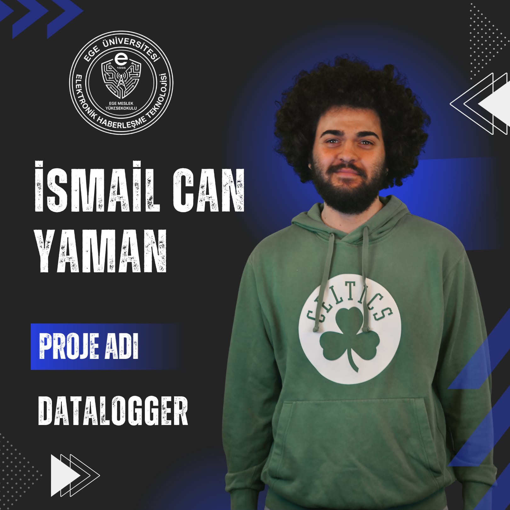
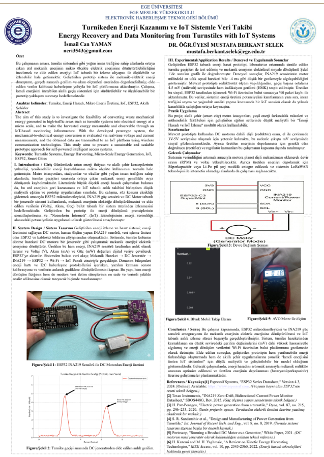
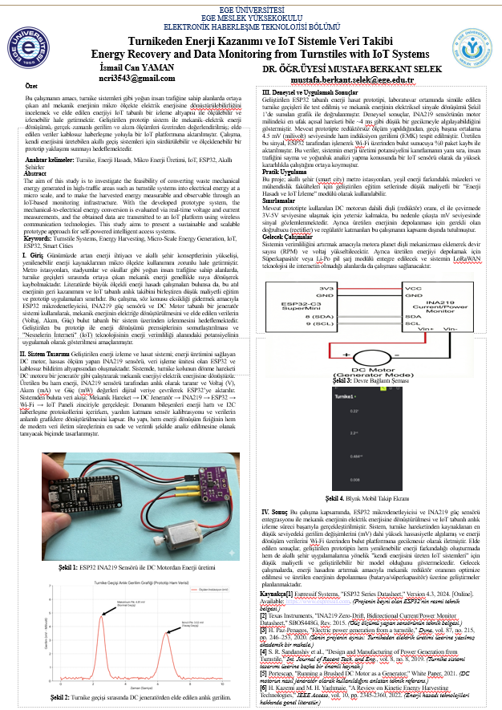

DataLogger & Turnikeden Elektrik Üretimi Projeleri
Hazırlayan: İsmail Can Yaman
Çift Proje Hakkında
Öğrencimiz İsmail Can Yaman, Ege Üniversitesi Meslek Yüksekokulu Elektronik Haberleşme Teknolojisi Bölümü 2025-2026 Bitirme Projeleri kapsamında DataLogger ve Turnikeden Elektrik Üretimi IoT Ekranda Veri Takibi olmak üzere iki farklı inovatif proje geliştirmiştir. Aşağıda her iki projenin detaylı sunumlarını ve posterlerini bulabilirsiniz.
DataLogger

Turnikeden Elektrik Üretimi IoT Ekranda Veri Takibi
